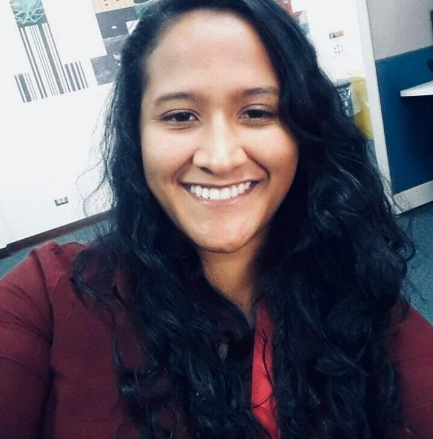

 Paola Badilla Avila
Address: San José, Coronado, Dulce Nombre
Phone: (+ 506) 8709-5433
E-mail: paob.a@hotmail.com
Summary
IT Technician with experience and knowledge in networking, hardware, software, process
documentation, strong skills in customer service and able to learn about new technologies.
Bachelor degree International Affairs.
Academic Studies
Universidad Internacional de las Americas (UIA), bachelor’s degree in international
Affairs, 2019.
Colegio Técnico de Calle Blancos, Technician in Computer Networking, 2009.
Languages
English (Professional working proficiency)
Spanish (Native or bilingual proficiency)
Portuguese (Professional working proficiency)
Computer Science
Centro de Formaciones Tecnológicas, CENFOTEC, Technician in Telematics, 2011.
Experience
Support Engineer at Microsoft
May 2018 - Present
Main duties
Provide technical support for user of Azure platform; main tasks included: sign up for
Azure account, subscription creation, understand billing and usage reports, manage
subscriptions ownership, know about the subscriptions offer types and commercial
experiences available for individual customers and companies.
Work with different teams across the organization to provide a proper solution for each
customer.
Find procedures or documentation that is not updated and engage internal teams to keep our
knowledge base with relevant information.
Mentoring new hires with Jedi-Padawan program
Teamwork with people within my team also other team members.